IntelliJ IDEA - JRebel 安装使用教程
JRebel 能做什么？
JRebel 是一款热部署插件。当你的 java-web 项目在 tomcat 中 run/debug 的时候 ,修改某一个 java 文件时，tomcat 并不能将此文件的修改 实时编译 并反映到运行的项目中去。JRebel 就可以解决在项目运行状态run/debug 状态下任意修改 java 文件并动态反馈到运行的项目中。
或许你说你可以这样干，修改 server.xml 的配置。
<Context path="/helloapp" docBase="helloapp" reloadable="true"/> 但改动 java 代码后果是 tomcat 会重启整个项目。
直奔主题
一，JRebel 插件 获取与安装
1，JRebel 官网下载地址
https://zeroturnaround.com/software/jrebel/download/#!/free-trial
注册可以获得 14 天的免费使用，注册过程此处省略 N 个字，注册下载相信大家都会。收费的问题下面会为大家解决，不用急。
下载好了如何安装？
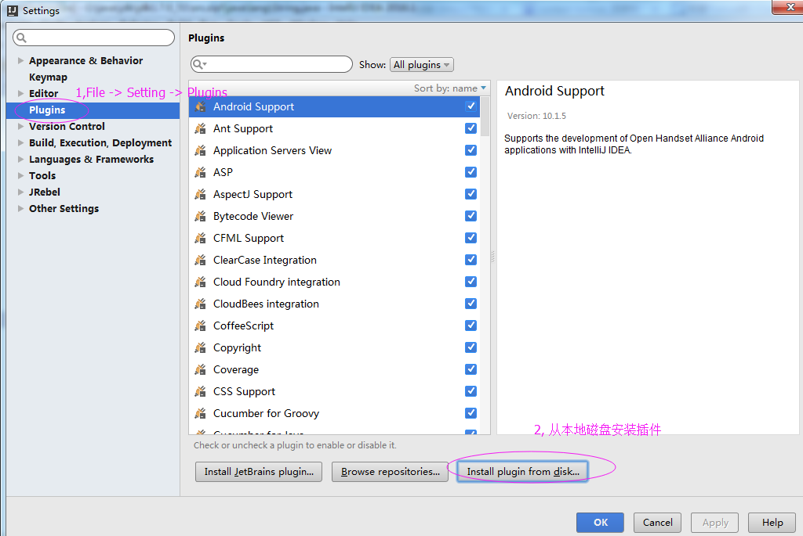
这里我就随便拿一个来演示本地安装了。
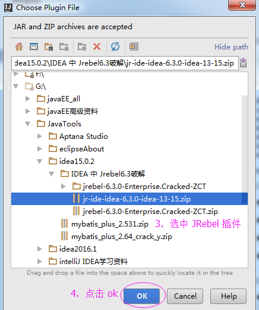
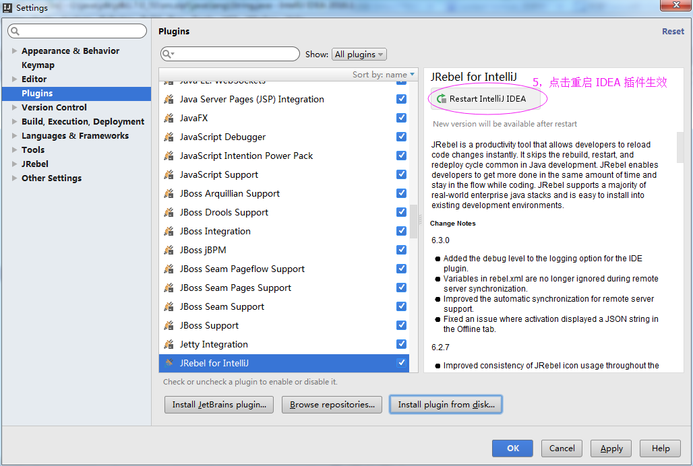
2，或者直接在 IDEA 中操作获取 JRebel 插件
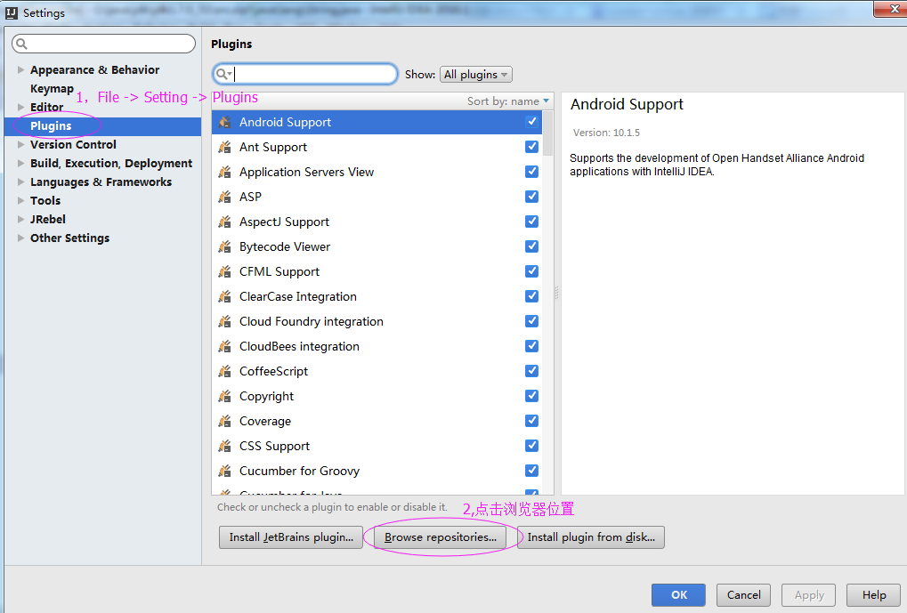
安装完成，记得重启 IDEA 使刚才安装的插件生效。
二，激活
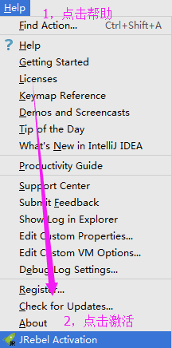
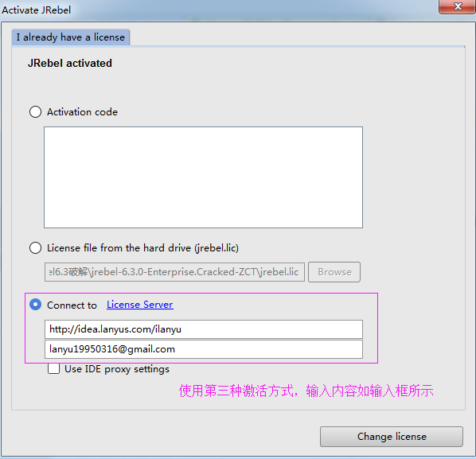
http://idea.lanyus.com/ilanyu
lanyu19950316@gmail.com
在此感谢 IDEA开源社区 http://www.ideajava.org/
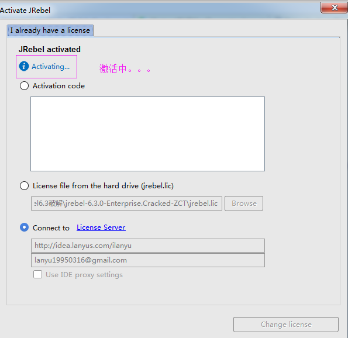
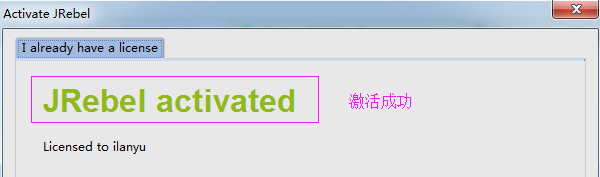
三：使用
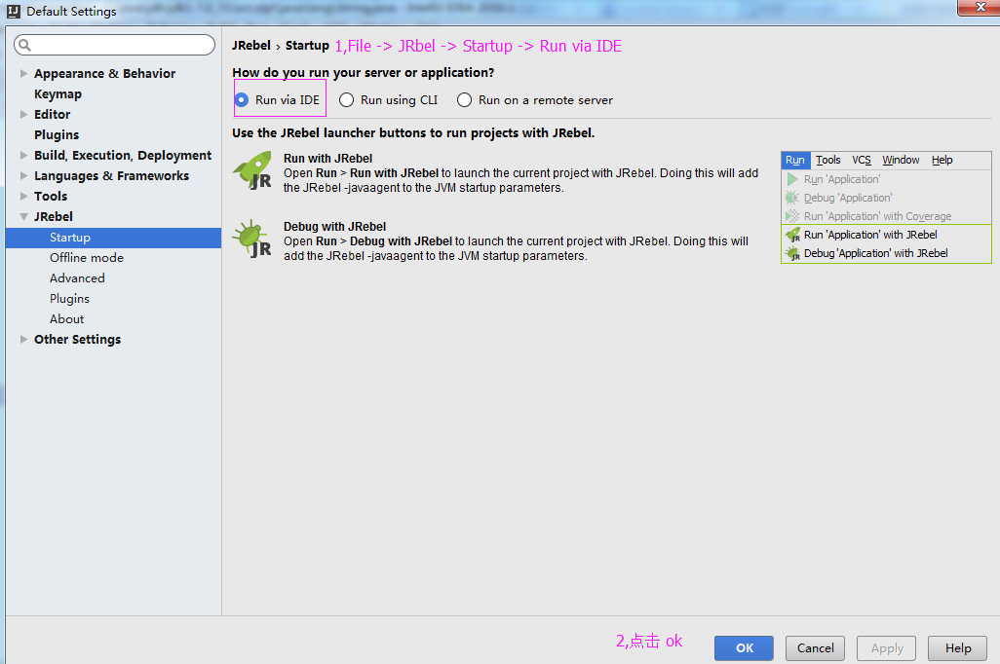
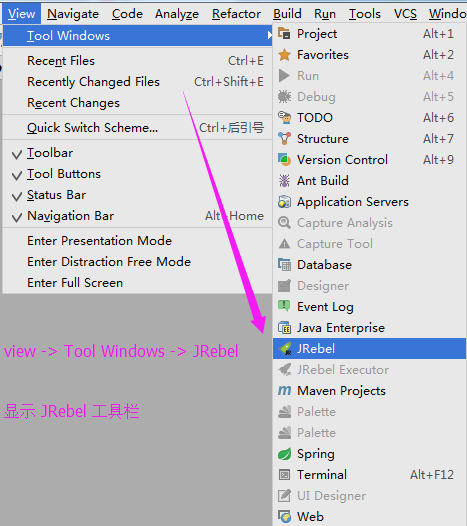
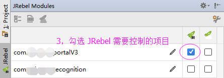

配置完毕！
Paste_Image.png
启动项目之后
任意修改 java 代码，并 ctrl + s 保存 ，update classes and resources 一下。
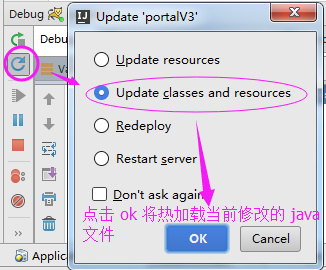
操作如下所示：
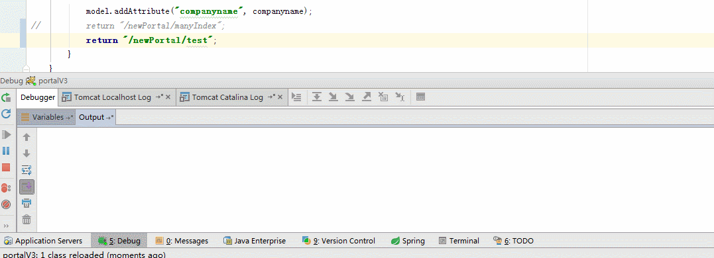
文／我是凌霄（简书作者）
原文链接：http://www.jianshu.com/p/d177316890e3
著作权归作者所有，转载请联系作者获得授权，并标注“简书作者”。
原文链接：http://www.jianshu.com/p/d177316890e3
著作权归作者所有，转载请联系作者获得授权，并标注“简书作者”。